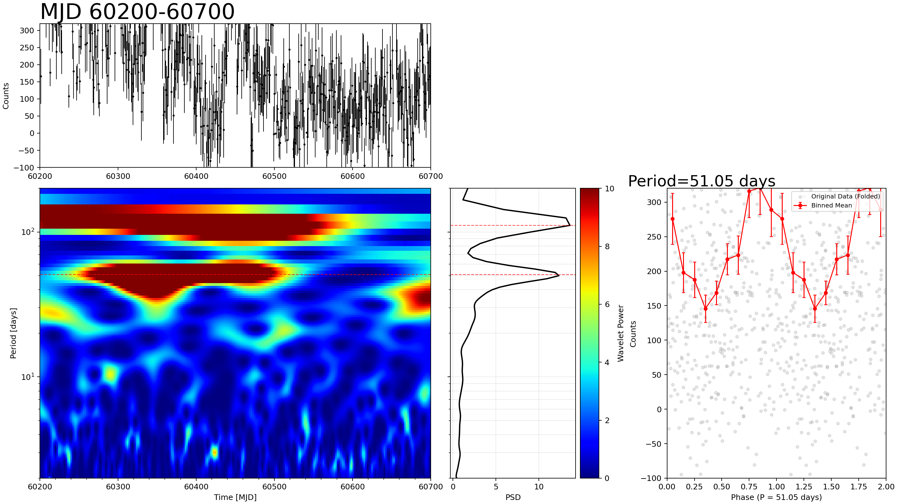
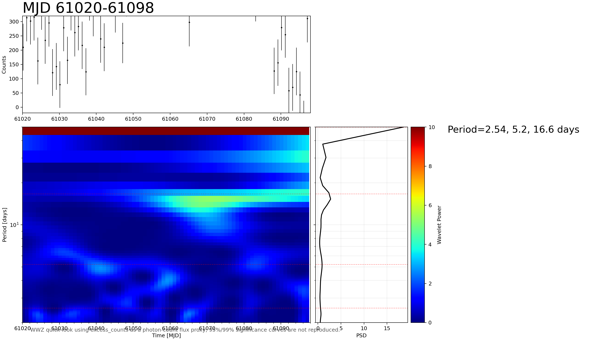
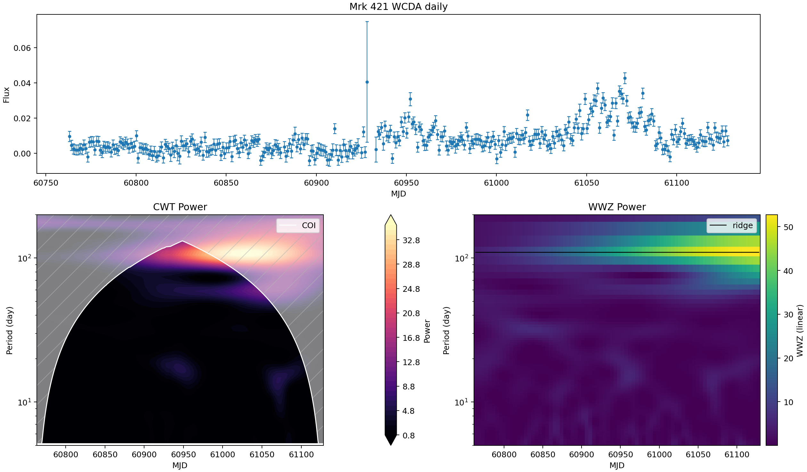
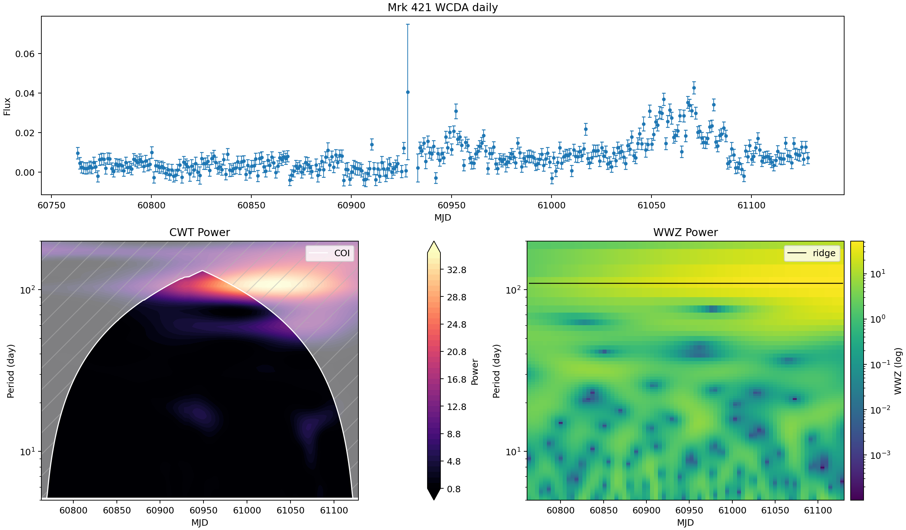
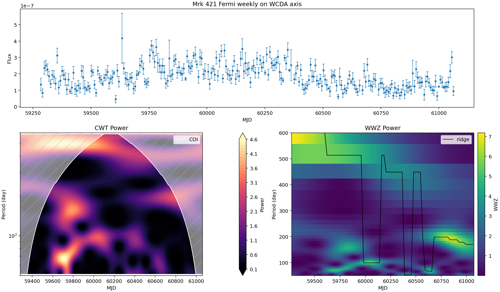
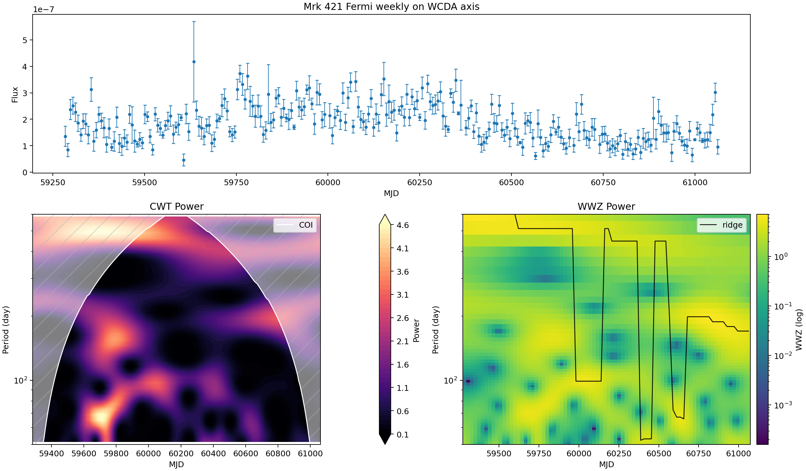

Mrk 421 / Mrk 501 WCDA Periodicity Analysis v1
数据与对齐
本报告使用的 WCDA 合并产品为：
data/processed/wcda_week/LHAASO-WCDA_Mkn421_2021-03-08_2026-03-29_week.csvdata/processed/wcda_day/LHAASO-WCDA_Mkn421_2025-03-29_2026-03-29_day.csvdata/processed/wcda_week/LHAASO-WCDA_Mkn501_2021-03-08_2026-03-29_week.csv
本地中间结果按源分离保存到 data/processed/aligned/mkn421/、data/processed/aligned/mkn501/、data/processed/periodicity/mkn421/ 与 data/processed/periodicity/mkn501/。Mrk 421 保留 Fermi weekly 对齐到 WCDA weekly MJD 轴的对照；Mrk 501 当前只使用 WCDA weekly，因为本工作区尚未提供 Mrk 501 的 WCDA daily 或 Fermi weekly 产品。
2022 射电-LHAASO 小窗口对齐补充
这个补充把公开 2022 射电 flux-density 点和本地 Mrk 421 LHAASO/WCDA weekly excess-rate proxy 放在同一 MJD 小窗口中。射电数据来自 CDS/VizieR J/A+A/684/A127 的 fig1.dat；这里只使用 flux-density 行，包括 Metsahovi 37 GHz、IRAM 86/230 GHz 与 SMA 225 GHz。解析后的射电子集共有 15 点：37 GHz 为 6 点，86 GHz 为 4 点，225 GHz 为 3 点，230 GHz 为 2 点。
射电点覆盖 MJD 59698.7206-59753.7418，图窗外扩到 MJD 59684.7206-59767.7418；本地 WCDA weekly 在该窗口内有 12 个 finite 点。顶部面板明确标为 WCDA excess-rate proxy，计算为 sum(n_on - n_bkg) / tobs，不是标定后的物理 flux。

方法
WCDA flux 使用 excess rate 表示：sum(n_on - n_bkg) / tobs，误差使用逐 hit bin 传播的 Poisson-style on/off 近似。CWT 使用 pycwt 的 Morlet wavelet，WWZ 使用 libwwz，入口脚本为 src/pipeline/periodicity_v1.py。
xgm poster 复现章节之后的常规周期性分析主图现在使用线性 WWZ heatmap 色标；之前的 log-color 版本保留在折叠对照图中。周期轴仍保持 log scale，WWZ 峰值搜索仍使用保存的线性 power 数值。
Quick-look CWT/WWZ 主图不是 post-trial significance 产品。下面新增的 local-significance section 只评估当前 weekly 候选峰，不包含 look-elsewhere、source-level 或 method-level trial correction。
峰值摘要
| 源 | 序列 | N | MJD min | MJD max | Median dt [d] | CWT peak [d] | CWT GWS | WWZ peak [d] | WWZ power |
|---|---|---|---|---|---|---|---|---|---|
| Mrk 421 | WCDA daily | 360 | 60763.167 | 61128.167 | 1.000 | 104.95 | 19.650 | 109.77 | 29.772 |
| Mrk 421 | WCDA weekly | 264 | 59284.333 | 61125.167 | 7.000 | 367.33 | 4.486 | 363.22 | 5.177 |
| Mrk 421 | Fermi weekly on WCDA axis | 250 | 59284.333 | 61062.167 | 7.000 | 583.10 | 2.828 | 513.37 | 3.260 |
| Mrk 501 | WCDA weekly | 264 | 59284.333 | 61125.167 | 7.000 | 389.17 | 4.407 | 402.98 | 6.385 |
- Mrk 421 WCDA weekly：CWT global peak 约 367.33 d；WWZ mean-power peak 约 363.22 d。
- Mrk 501 WCDA weekly：CWT global peak 约 389.17 d；WWZ mean-power peak 约 402.98 d。
Local-significance assessment of current candidate peaks
本节把 Mrk 421 和 Mrk 501 WCDA weekly global spectra 中已经看到的候选峰固定下来，只问这些固定峰在简单 red-noise null model 下是否局部异常。当前 WCDA 序列仍是 wcda_flux_excess，也就是 photon-count / excess-rate proxy，不是最终 calibrated flux；后续拿到 flux 数据后需要重跑。
CWT 使用 pycwt Morlet global-wavelet-spectrum 的 AR(1) red-noise local reference。WWZ 使用 1000 条 AR(1) Gaussian surrogate light curves，保持同一 weekly sampling，并在每个候选周期 ±10% 的 local window 内给出 FAP。CWT 和 WWZ 是同一条光变结构的两种呈现，不当作独立发现。只有约 3-5 个 cycle 的峰只能写作 candidate/hint，不能写成 robust QPO detection。
| 源 | 方法 | 周期 [d] | Cycles | Observed | Local FAP | 95% ref. | 99% ref. | 解读 |
|---|---|---|---|---|---|---|---|---|
| Mrk 421 | CWT | 129.87 | 14.17 | GWS 2.965 | — | 11.371 | 14.095 | 低于 AR(1) 95% local reference。 |
| Mrk 421 | CWT | 367.33 | 5.01 | GWS 4.486 | — | 14.675 | 20.042 | 低于 AR(1) 95% local reference；只有约 5 个 cycle。 |
| Mrk 421 | WWZ | 135.67 | 13.57 | WWZ 4.634 | 0.4665 | 7.442 | 9.232 | AR(1) surrogate 下不显得局部异常。 |
| Mrk 421 | WWZ | 363.22 | 5.07 | WWZ 5.177 | 0.6244 | 15.565 | 21.794 | AR(1) surrogate 下不显得局部异常。 |
| Mrk 501 | CWT | 137.59 | 13.38 | GWS 1.270 | — | 3.687 | 4.593 | 低于 AR(1) 95% local reference。 |
| Mrk 501 | CWT | 389.17 | 4.73 | GWS 4.407 | — | 4.766 | 6.545 | 接近但低于 AR(1) 95% local reference；只有约 5 个 cycle。 |
| Mrk 501 | WWZ | 61.22 | 30.07 | WWZ 1.783 | 0.5165 | 2.500 | 2.984 | AR(1) surrogate 下不显得局部异常。 |
| Mrk 501 | WWZ | 140.87 | 13.07 | WWZ 1.761 | 0.7113 | 3.665 | 4.692 | AR(1) surrogate 下不显得局部异常。 |
| Mrk 501 | WWZ | 402.98 | 4.57 | WWZ 6.385 | 0.0310 | 5.233 | 7.726 | 通过本地 95% surrogate check，但没有通过 99%；仍不是 global/post-trial detection。 |
解读：第一版 local-only 检验中，大多数 weekly 候选峰与简单 AR(1) red-noise null 相容。最强例外是 Mrk 501 WWZ 的 ~403 d，local-window FAP ≈ 0.031；但它只有约 4.6 个 cycle，且还没有对 period search、两个源、多方法查看做 trial correction。
xgm poster 复现对比
| 窗口 | xgm poster 标注 | 我的复现结果 | 解读 |
|---|---|---|---|
| MJD 60200-60700 | 51.05 d | Global WWZ peak 为 111.01 d；最接近 51.05 d 的网格点为 49.93 d，power=12.330，rank 3。 | 50 d 是局部强结构，但不是本次运行的主峰。 |
| MJD 61020-61098 | 2.54, 5.2, 16.6 d | Global peak 位于 50.00 d 搜索上边界；16.96 d 排第 3，5.12 d 排第 10，2.52 d 不突出。 | 16.6 d 有较清楚对应；两个更短周期在本次运行中较弱。 |
xgm poster 周期是 poster 中的参考标注。下面的 local FAP 是我自己的 AR(1) surrogate WWZ 检查，不是复现 poster 作者的显著性定义；这里只给 local-window FAP，没有 global look-elsewhere correction。
| 窗口 | 目标来源 | 目标 [d] | 最近网格 [d] | Local peak [d] | WWZ power | Rank | Cycles | 我的 local FAP | 解读 |
|---|---|---|---|---|---|---|---|---|---|
| 60200-60700 | xgm poster reference | 51.05 | 49.92 | 49.92 | 12.330 | 3 | 9.77 | 0.0619 | 接近 local 95%，但在我的 AR(1) surrogate 检验中没有过 5% 阈值。 |
| 60200-60700 | my reproduction peak | 111.01 | 111.01 | 111.01 | 13.612 | 1 | 4.49 | 0.0779 | 我的 global peak 比 xgm 51.05 d 网格点更强，但这里没有达到 5% local significance。 |
| 61020-61098 | xgm poster reference | 2.54 | 2.52 | 2.30 | 0.671 | 24 | 30.31 | 0.0340 | 通过我的 local 95% surrogate check，但绝对 WWZ power 很低，且未做 trial correction。 |
| 61020-61098 | xgm poster reference | 5.20 | 5.12 | 5.12 | 0.909 | 10 | 14.81 | 0.5095 | 在我的 AR(1) surrogate 检验中不显得局部异常。 |
| 61020-61098 | xgm poster reference | 16.60 | 16.96 | 15.28 | 2.767 | 2 | 4.64 | 0.6024 | 在我的复现中可见，但这个 surrogate 检验下不显著。 |
| 61020-61098 | my reproduction boundary peak | 50.00 | 50.00 | 50.00 | 18.573 | 1 | 1.54 | 0.0360 | 位于搜索上边界且只有 1.54 cycles，不能当作稳健 QPO。 |


我的结果：N=493，MJD 60200.167-60699.167，median cadence 1.000 d，max gap 4.351 d。Global mean-power peak 为 111.01 d（power=13.612）；最接近 51.05 d 的网格点为 49.93 d（power=12.330），rank 3。


我的结果：N=78，MJD 61020.167-61097.167，median cadence 1.000 d，max gap 1.000 d。Global peak 位于 50.00 d 搜索上边界（power=18.573）。Poster 周期附近，16.96 d 为第 3 强 global-WWZ 网格点，5.12 d 排第 10，2.52 d 不突出。
Mrk 421 图像
WCDA daily

展开 Mrk 421 WCDA daily 的 log-color WWZ 对照图

Quick-look peaks：N=360，MJD 60763.167-61128.167，median cadence 1.000 d。CWT peak 为 104.95 d，GWS=19.650；WWZ mean-power peak 为 109.77 d，power=29.772。
WCDA weekly


展开 Mrk 421 WCDA weekly 的 log-color WWZ 对照图

Quick-look peaks：N=264，MJD 59284.333-61125.167，median cadence 7.000 d。CWT peak 为 367.33 d，GWS=4.486；WWZ mean-power peak 为 363.22 d，power=5.177。
Fermi weekly on WCDA axis

展开 Mrk 421 Fermi weekly on WCDA axis 的 log-color WWZ 对照图

Quick-look peaks：N=250，MJD 59284.333-61062.167，median cadence 7.000 d。CWT peak 为 583.10 d，GWS=2.828；WWZ mean-power peak 为 513.37 d，power=3.260。
Mrk 501 图像
WCDA weekly


展开 Mrk 501 WCDA weekly 的 log-color WWZ 对照图

Quick-look peaks：N=264，MJD 59284.333-61125.167，median cadence 7.000 d。CWT peak 为 389.17 d，GWS=4.407；WWZ mean-power peak 为 402.98 d，power=6.385。
Data and Alignment
The WCDA merged products used here are:
data/processed/wcda_week/LHAASO-WCDA_Mkn421_2021-03-08_2026-03-29_week.csvdata/processed/wcda_day/LHAASO-WCDA_Mkn421_2025-03-29_2026-03-29_day.csvdata/processed/wcda_week/LHAASO-WCDA_Mkn501_2021-03-08_2026-03-29_week.csv
Local intermediate outputs are separated by source under data/processed/aligned/mkn421/, data/processed/aligned/mkn501/, data/processed/periodicity/mkn421/, and data/processed/periodicity/mkn501/. Mrk 421 retains its Fermi weekly comparison aligned to the WCDA weekly MJD axis; Mrk 501 currently uses only the WCDA weekly product because no Mrk 501 WCDA daily or Fermi weekly product is available in this workspace.
2022 Radio-LHAASO Short-Window Alignment
This supplement aligns public 2022 radio flux-density points with the local Mrk 421 LHAASO/WCDA weekly excess-rate proxy. The radio data come from CDS/VizieR J/A+A/684/A127, table fig1.dat. Only flux-density rows are used: Metsahovi 37 GHz, IRAM 86/230 GHz, and SMA 225 GHz. The parsed radio subset has 15 points: 37 GHz = 6, 86 GHz = 4, 225 GHz = 3, and 230 GHz = 2.
The radio points span MJD 59698.7206-59753.7418, and the plot window is padded to MJD 59684.7206-59767.7418. The local WCDA weekly file contributes 12 finite points in this window. The top panel is explicitly labelled WCDA excess-rate proxy, computed as sum(n_on - n_bkg) / tobs; it is not a calibrated physical flux.
Methods
WCDA flux is represented as an excess rate, sum(n_on - n_bkg) / tobs, with a Poisson-style on/off error approximation propagated per hit bin. CWT uses a Morlet wavelet through pycwt. WWZ uses libwwz, with the v1 quick-look grid saved by src/pipeline/periodicity_v1.py.
The regular periodicity figures after the xgm poster comparison now use linear WWZ heatmap color normalization in the main display. The previous log-color versions are retained in folded comparison panels. The period axis remains log-scaled, and the WWZ peak search still uses the saved linear power values.
The quick-look CWT/WWZ maps are not post-trial significance products. The local-significance section below only assesses the current weekly candidate peaks and applies no look-elsewhere, source-level, or method-level trial correction.
Peak Summary
| Source | Series | N | MJD min | MJD max | Median dt [d] | CWT peak [d] | CWT GWS | WWZ peak [d] | WWZ power |
|---|---|---|---|---|---|---|---|---|---|
| Mrk 421 | WCDA daily | 360 | 60763.167 | 61128.167 | 1.000 | 104.95 | 19.650 | 109.77 | 29.772 |
| Mrk 421 | WCDA weekly | 264 | 59284.333 | 61125.167 | 7.000 | 367.33 | 4.486 | 363.22 | 5.177 |
| Mrk 421 | Fermi weekly on WCDA axis | 250 | 59284.333 | 61062.167 | 7.000 | 583.10 | 2.828 | 513.37 | 3.260 |
| Mrk 501 | WCDA weekly | 264 | 59284.333 | 61125.167 | 7.000 | 389.17 | 4.407 | 402.98 | 6.385 |
- Mrk 421 WCDA weekly: CWT global peak near 367.33 d; WWZ mean-power peak near 363.22 d.
- Mrk 501 WCDA weekly: CWT global peak near 389.17 d; WWZ mean-power peak near 402.98 d.
Local-significance assessment of current candidate peaks
This section freezes the candidate peaks already visible in the Mrk 421 and Mrk 501 WCDA weekly global spectra and asks only whether those fixed peaks look locally unusual under simple red-noise null models. The WCDA series is still wcda_flux_excess, a photon-count/excess-rate proxy rather than a final calibrated flux product; this workflow should be rerun once calibrated flux is available.
CWT uses pycwt Morlet global-wavelet-spectrum references for an AR(1) red-noise null. WWZ uses 1000 AR(1) Gaussian surrogate light curves on the same weekly sampling and reports a local-window FAP within ±10% of each candidate period. CWT and WWZ are two views of the same light curve structure, not independent discoveries. Peaks with only about 3-5 observed cycles should be treated as candidates or hints, not robust QPO detections.
| Source | Method | Period [d] | Cycles | Observed | Local FAP | 95% ref. | 99% ref. | Reading |
|---|---|---|---|---|---|---|---|---|
| Mrk 421 | CWT | 129.87 | 14.17 | GWS 2.965 | — | 11.371 | 14.095 | Below AR(1) 95% local reference. |
| Mrk 421 | CWT | 367.33 | 5.01 | GWS 4.486 | — | 14.675 | 20.042 | Below AR(1) 95% local reference; only about five cycles. |
| Mrk 421 | WWZ | 135.67 | 13.57 | WWZ 4.634 | 0.4665 | 7.442 | 9.232 | Not locally unusual in the AR(1) surrogate test. |
| Mrk 421 | WWZ | 363.22 | 5.07 | WWZ 5.177 | 0.6244 | 15.565 | 21.794 | Not locally unusual in the AR(1) surrogate test. |
| Mrk 501 | CWT | 137.59 | 13.38 | GWS 1.270 | — | 3.687 | 4.593 | Below AR(1) 95% local reference. |
| Mrk 501 | CWT | 389.17 | 4.73 | GWS 4.407 | — | 4.766 | 6.545 | Close to but below the AR(1) 95% local reference; only about five cycles. |
| Mrk 501 | WWZ | 61.22 | 30.07 | WWZ 1.783 | 0.5165 | 2.500 | 2.984 | Not locally unusual in the AR(1) surrogate test. |
| Mrk 501 | WWZ | 140.87 | 13.07 | WWZ 1.761 | 0.7113 | 3.665 | 4.692 | Not locally unusual in the AR(1) surrogate test. |
| Mrk 501 | WWZ | 402.98 | 4.57 | WWZ 6.385 | 0.0310 | 5.233 | 7.726 | Passes this local 95% surrogate check but not 99%; still not a global/post-trial detection. |
Reading: in this first local-only pass, most current weekly peaks are consistent with the simple AR(1) red-noise null. The strongest exception is Mrk 501 WWZ near 403 d, with local-window FAP ≈ 0.031, but it has only about 4.6 cycles and has not been corrected for the period search, two-source comparison, or using both CWT and WWZ.
xgm Poster Comparison
| Window | xgm poster reported | My reproduction | Reading |
|---|---|---|---|
| MJD 60200-60700 | 51.05 d | Global WWZ peak 111.01 d; nearest 51.05 d grid point is 49.93 d, power 12.330, rank 3. | 50 d is a strong local feature, but not the dominant peak in this run. |
| MJD 61020-61098 | 2.54, 5.2, 16.6 d | Global peak at the 50.00 d upper search boundary; 16.96 d ranks 3, 5.12 d ranks 10, and 2.52 d is not prominent. | 16.6 d has a visible counterpart; the shorter candidates are weaker here. |
The xgm poster periods are reference labels from the poster. The local FAP values below are my own AR(1) surrogate WWZ checks, not a reproduction of the poster author's significance calculation. They are local-window FAPs only, with no global look-elsewhere correction.
| Window | Target source | Target [d] | Nearest grid [d] | Local peak [d] | WWZ power | Rank | Cycles | My local FAP | Reading |
|---|---|---|---|---|---|---|---|---|---|
| 60200-60700 | xgm poster reference | 51.05 | 49.92 | 49.92 | 12.330 | 3 | 9.77 | 0.0619 | Near local 95%, but does not pass the 5% threshold in my AR(1) surrogate test. |
| 60200-60700 | my reproduction peak | 111.01 | 111.01 | 111.01 | 13.612 | 1 | 4.49 | 0.0779 | My global peak is stronger than the xgm 51.05 d grid point, but is not locally significant at 5% here. |
| 61020-61098 | xgm poster reference | 2.54 | 2.52 | 2.30 | 0.671 | 24 | 30.31 | 0.0340 | Passes my local 95% surrogate check, but the absolute WWZ power is low and this is not trial corrected. |
| 61020-61098 | xgm poster reference | 5.20 | 5.12 | 5.12 | 0.909 | 10 | 14.81 | 0.5095 | Not locally unusual in my AR(1) surrogate test. |
| 61020-61098 | xgm poster reference | 16.60 | 16.96 | 15.28 | 2.767 | 2 | 4.64 | 0.6024 | Visible in my reproduction but not locally significant in this surrogate test. |
| 61020-61098 | my reproduction boundary peak | 50.00 | 50.00 | 50.00 | 18.573 | 1 | 1.54 | 0.0360 | At the search upper boundary with only 1.54 cycles; do not treat as a robust QPO. |
My result: N=493, MJD 60200.167-60699.167, median cadence 1.000 d, max gap 4.351 d. The global mean-power peak is 111.01 d (power 13.612), while the nearest 51.05 d grid point is 49.93 d (power 12.330), rank 3.
My result: N=78, MJD 61020.167-61097.167, median cadence 1.000 d, max gap 1.000 d. The global peak sits at the 50.00 d upper search boundary (power 18.573). Around the poster periods, 16.96 d is the third strongest global-WWZ grid point, 5.12 d ranks tenth, and 2.52 d is not prominent.
Mrk 421 Figures
WCDA daily
Show log-color WWZ comparison for Mrk 421 WCDA daily
Quick-look peaks: N=360, MJD 60763.167-61128.167, median cadence 1.000 d. CWT peak is 104.95 d with GWS 19.650; WWZ mean-power peak is 109.77 d with power 29.772.
WCDA weekly
Show log-color WWZ comparison for Mrk 421 WCDA weekly
Quick-look peaks: N=264, MJD 59284.333-61125.167, median cadence 7.000 d. CWT peak is 367.33 d with GWS 4.486; WWZ mean-power peak is 363.22 d with power 5.177.
Fermi weekly on WCDA axis
Show log-color WWZ comparison for Mrk 421 Fermi weekly on WCDA axis
Quick-look peaks: N=250, MJD 59284.333-61062.167, median cadence 7.000 d. CWT peak is 583.10 d with GWS 2.828; WWZ mean-power peak is 513.37 d with power 3.260.
Mrk 501 Figures
WCDA weekly
Show log-color WWZ comparison for Mrk 501 WCDA weekly
Quick-look peaks: N=264, MJD 59284.333-61125.167, median cadence 7.000 d. CWT peak is 389.17 d with GWS 4.407; WWZ mean-power peak is 402.98 d with power 6.385.